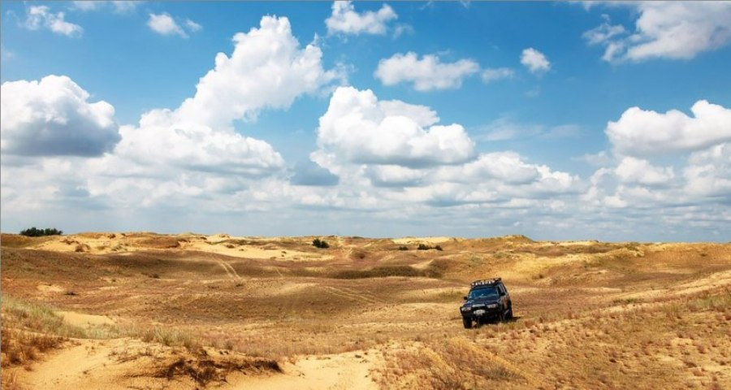
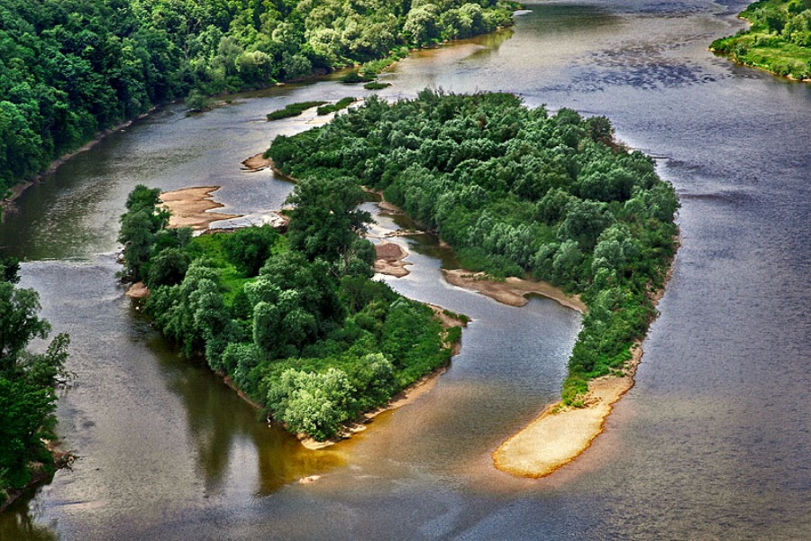
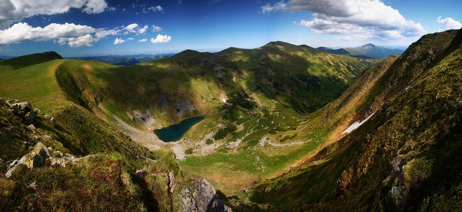
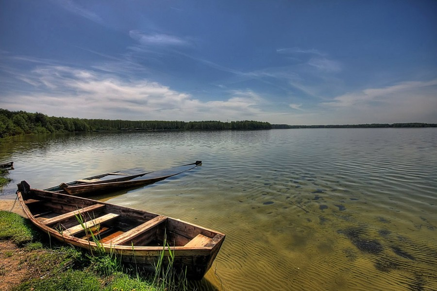
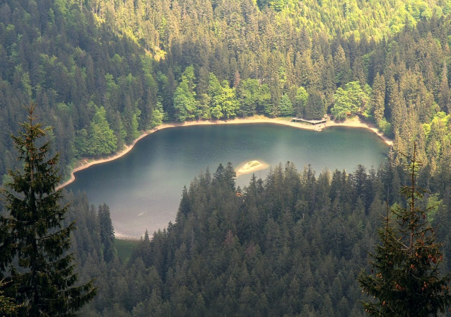
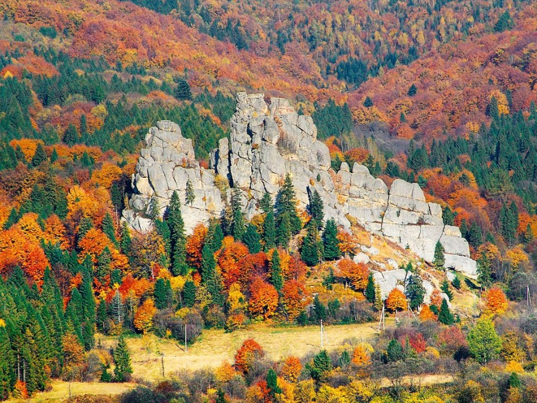
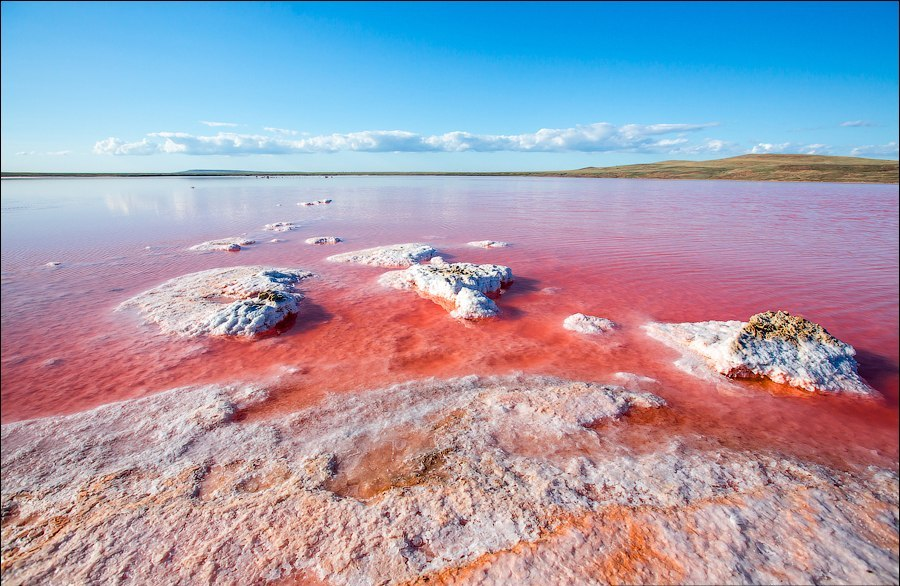
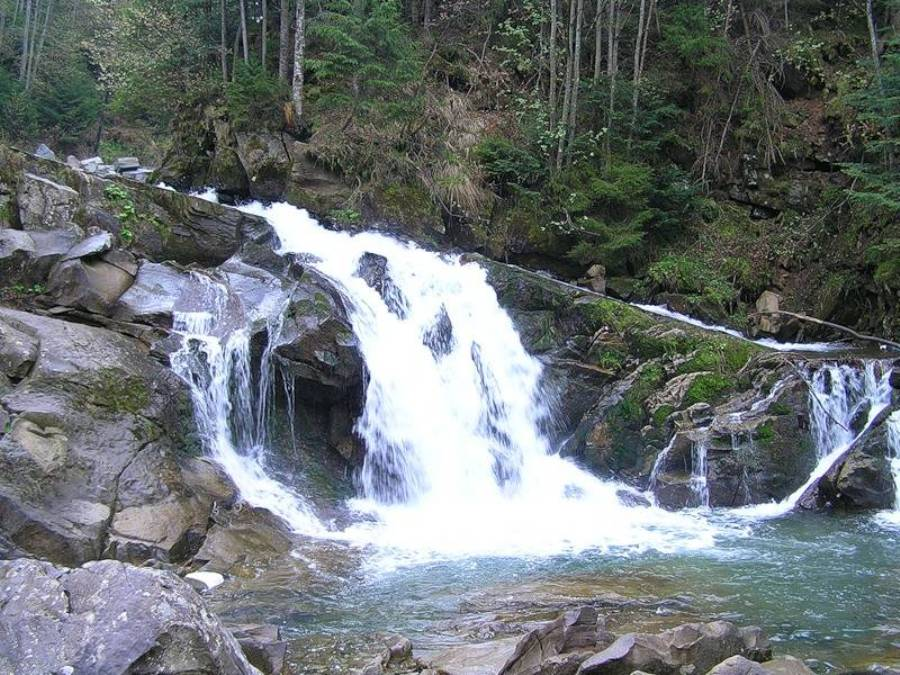
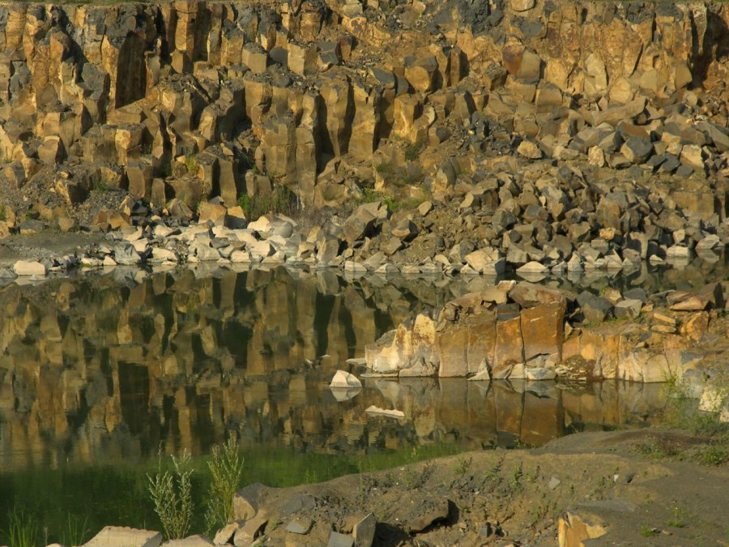
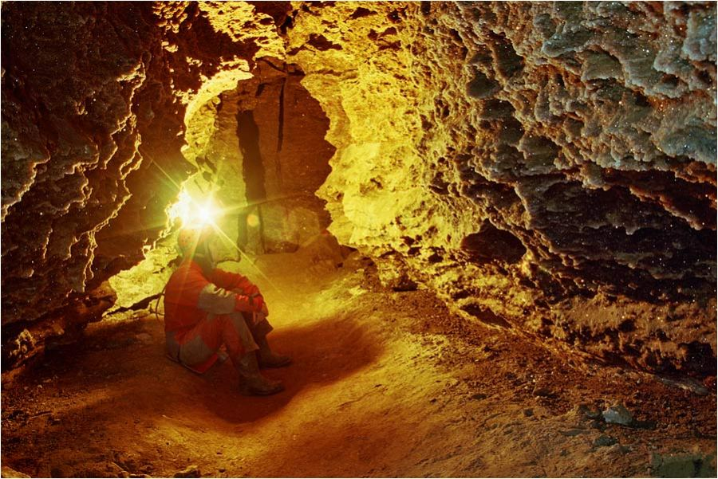

Олешківські піски
Найбільша пустеля Європи знаходиться в Україні. 200 гектарів гарячого піщаного моря, оточеного берегами лісів. Це диво природи колись було зеленим степом, який з часом перетворився на пустелю. Пустеля складається з 7 так званих арен, між якими є озера та дерева. Дивовижно, та посеред піщаного масиву на глибині 300-400 метрів знаходиться прісне підземне озеро. Інколи тут можна побачити навіть невеликі “торнадо”. Влітку пісок нагрівається до 75 градусів за цельсієм.
Тривалий час Олешківські піски були закритою /секретною зоною. На території пустелі розташовувався військовий полігон. СРСР залишив по ще одне страхіття часів холодної війни: ідеальне, на думку військових, місце для вправляння у скиданні бомб. Понад 2 десятки років тому над пустелею шмигали літаки, вправляючись у влучності. Тож скільки ще вибухівки ховають бархани – невідомо. Але пустеля неначе сама невпинно вивільняється від надокучливої ноші. Пісок, гнаний вітром, пливе собі з місця на місце, й пагорби постійно міняють свої форми.
Дністровський каньйон
Це найбільший в Україні та один із найбільших в Європі каньонів. На його території можна побачити близько сотні пам’яток живої та неживої природи світового значення. Це 200-літні дубові ліси, водоспади, печери, скельні храми та фортечні руїни… Неймовірно, та кам’яні береги Дністровського каньйону, що подекуди здіймаються на висоту 250 м, досі складають залишки порід палеозойської ери – часу появи на землі перших дерев та хребетних тварин.
Дністровський каньйон починається в районі села Нижнів Івано-Франківської області унікальним відслоненням юрського періоду, а закінчується поблизу села Трубчин Борщівського району Тернопільської області найбільшим у світі відслоненням силурійських порід.
Ці кам’яні береги досі складають залишки порід таких давніх історичних періодів як силур та девон. Це палеозойська ера – час, коли нашу Планету лише почали заселяти перші хребетні тварини, а на суші з’являлись перші дерева. (Це більше як 400 млн. років тому). Скелі девонського періоду, джерела та водоспади є найдавнішими природними пам’ятками Дністровського каньйону. Він – ціла книга історії природи нашої землі.
Флора та фауна Дністровського каньйону до кінця не вивчені, та вони насправді унікальні. За даними вчених, більше двох третіх живих організмів, які населяють ці води, є цілком унікальними видами. Аборигени пізнього юрського періоду, виявлені тут, були вперше описані в науці.
Чорногора
Найвищий хребет Українських Карпат, що об’єднує шість вершин понад 2000 метрів (Говерла, Петрос, Ребра, Гутин-Томнатик, Бребенескул та Піп Іван). Чорногора лежить між Чорною Тисою та Чорним Черемошем (річки), а її схили вкривають карпатські праліси. Її альпійські рельєфи з льодяниковими формами утворюють високі узгір’я, полонини та гірські озера, що перлинами виблискують між ними. Чорногора – це ціла природна система. Унікальна і дивовижно красива.
Шацькі озера
Шацький природний парк налічує 24 унікальних озера, що розливаються на території одного з найбільших болотно-озерно-лісових комплексів в Європі – Полісся. Шацькі озера потопають у зелених просторах хвойних лісів. Це єдиний водний комплекс, тож озера, не маючи чітких меж, з’єднуються між собою протоками і каналами. Водойми багаті на рибу, лікувальні грязі, мають чисту, надзвичайно прозору воду і піщані береги. Найглибше із них – Світязь – визнане одним із 7 природних чудес України.
Цей куточок України – найкраще місце для спокійного, тихого відпочинку на лоні озерної проди. Шацькі озера прекрасні і дивовижні, але повною мірою відчути їхній затишок можна, лише віддалившись від шуму, створюваного натовпами відпочиваючих. Тому ми радимо вам обирати менш людні місця, які не поступаючись красою Світязю (а деякі є навіть гарнішими), подарують вам найкомфортніші, найприємніші незабутні літні дні.
Як відомо, цей Національний природній парк складається з 24 унікальних озер. До речі, Шацькі – це простонародна їх назва. Насправді, кожне має свою романтичну назву: тут і Луки, і Озерце, і Кримне, і Чорне… Вода в озерах не тільки дуже чиста, але й трохи мінералізована. Її можна спокійно пити, навіть не очищаючи.
Неймовірна різноманітність риб в Шацьких озерах: окунь, плотва, щука, лящ, карась, короп, сом, в’юн, вугор, канадський сом, судак, сазан амурський і білий амур. В багатьох живуть також раки.
Прибережні ліси багаті всілякими ягодами: суниця, малина, лохина, чорниця, ожина, брусниця, журавлина. Є в місцевих лісах і гриби, причому високої категорії: боровики (білі), підосичники, підберезники, маслюки, лисички.
Озеро Синевир
Синевир справедливо називають найкрасивішим озером нашої країни. Морське око Карпат, що дрімає у нетрях прадавніх лісів. Cеред Карпатських гір на висоті 989 метрів над рівнем моря. Його зіниця – зелений острів, що виглядає невеликим клаптиком суші посеред води. Утворився Синевир близько десятка тисяч років тому унаслідок потужного зсуву гірських порід від землетрусу. Спокійний і непорушний, він ніколи, навіть у час найбільших паводків, не виводить свої води із берегів.
Озеро Синевир належить до семи природних чудес України. Кажуть, воно утворилось приблизно 10 тисяч років тому. Тоді бистрі річкові води стримали гори, перегородивши їм шлях на тому місці, де згодом утворилось озеро
День за днем, не зупиняючись, переливають свої потоки у Синевир чотири джерела. Прозорі і цілющі. Розлили плесо аж на 7 гекарів. А посередині нього, наче зіниця ока, видніє невеличкий острів. Не дарма Синевир називають Морським оком Карпат. Голубою перлиною із висоти пташиного польоту видніє воно поміж гущі соснових лісів.
Диво природи під назвою Синевир заховалось у горах на висоті майже тисячі метрів над рівнем моря. 22-х метрів сягають глибини озера. Глибшу північну та мілкішу південну частину розділяє підводний кряж. Цікаво, що Синевир ніколи не виходить зі своїх берегів – ні за бурхливих паводків, ні у час танення гірських снігів.
Урицькі скелі
Це пам’ятка природи національного значення, яка не має аналогів у Європі. Височенні скелі (до 50м) стоять просто посеред лісу (Львівщина). Важко уявити, та їх вік складає 55 млн. років. Ерозійні останці масивних пісковиків внаслідок тектонічних рухів землі перейшли у майже вертикальне положення, утворивши собою дивовижної форми скелі. Кам`яне царство, де рік за роком вода, вітер і сонце виточували цілу систему гротів – таємничих печер і ходів.
Коясье озеро
Залежно від часу доби рожеве Кояське озеро, що у Криму, змінює відтінок води від оранжево-червоного до ніжно-рожевого. На цьому кольоровому плесі можна побачити дивовижні нарости з кристалів – невеликі соляні «айсберги» утворюються, коли відступає вода і оголює прибережні камені. Кояське озеро у Криму колись було частиною Чорного моря, тепер воно відділене частиною суші. Рожевий колір вода має завдяки мікроскопічним водоростям Dunaliella Salina, які виробляють бета-каротин.
Буковинські водоспади
У гірській лісовій ущелині вздовж течії річки Смугарів на Буковині лягли срібними доріжками Смугарські водоспади. Залежно від пори року вони змінюють свої голоси, перетворюючись із тихих струмочків на голосні потоки. Найвищий і найкрасивіший з них – Великий Гук – пускає свої води із висоти 19 метрів. Найнижчий, названий Воротами – простягнувся на 3, 5 метри. Така система водоспадів (завдовжки 2 км) різної потужності й висоти є унікальним явищем для Українських Карпат.
Базальтові стовпи
Базальтові стовпи Івано-Долинського родовища – творіння древнього вулкана, що діяв тут 650 мільйонів років тому . Ці камені утворилися в результаті селективного плавлення ультраосновної речовини мантії Землі. У час їх «народження» температура порід сягала 1300°С, пізніше магма застигла і на поверхні утворилися вражаючих форм стовпи. Чіткі і рівні багатогранники, розташовані в ряд на дві сотні метрів. Кам`яні велетні сягають 30 метрів у висоту.
Оптимістична печера
Виявляється, найдовша у світі гіпсова печера знаходиться на Тернопільщині. Це горизонтальний лабіринт довжиною більше 240 км. Дзеркала підземних озер та дивовижні за формою і кольорами кристали. А ще «снігові кучугури» – скупчення на дні ходів прозорих голчастих кристаликів гіпсу, які назвали “печерним снігом”. Здається, час тут зупинився. Адже температура повітря в Оптимістичній печері не змінюється ніколи – вона не залежить від зміни пір року на поверхні.
Більшість з цих печер утворились сотні тисяч, а то й мільйони років тому. Тоді, коли народжувались самі Карпати. Їхні стіни відшліфовані хвилями давнього Сарматського моря.
Печери не дарують легковажності. Не один раз у кам’яних ложах знаходили скелети тих, хто невідомо, скільки років тому заблукав між підземних доріг.
Вчені кажуть, що на Тернопільщині поки що відкрито лише одну п’яту усіх печер. Тож величезне кам’яне царство досі залишається таємним підземним світом, закритим для людини.